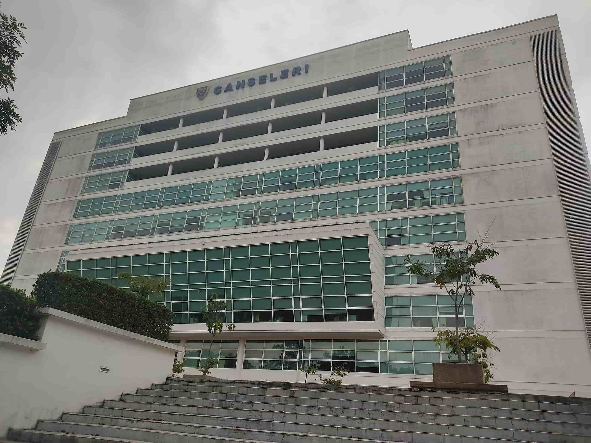
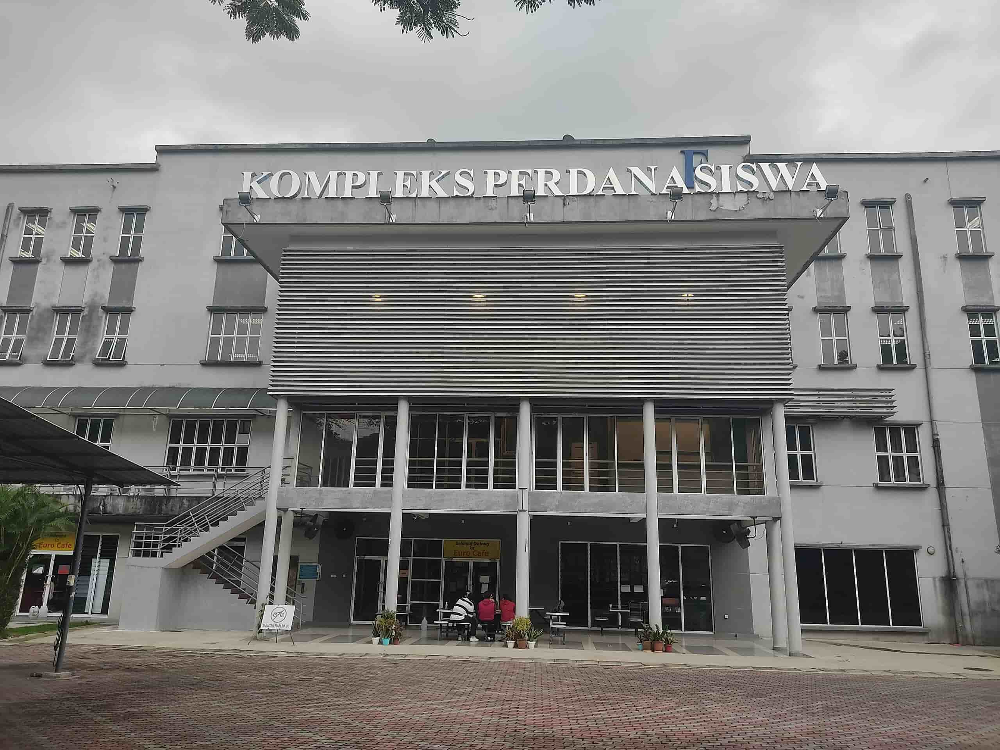
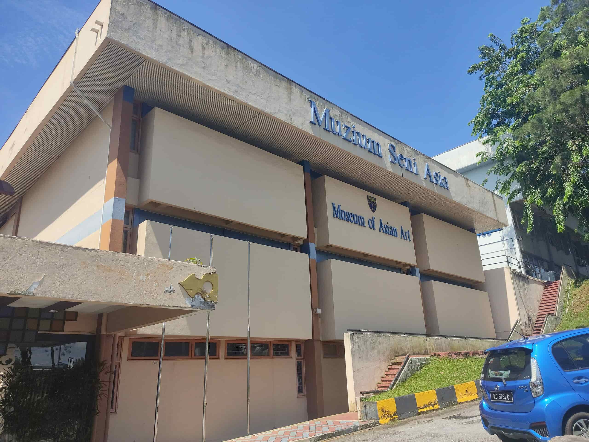

UM Guideline
UM Guideline
Welcome to the UM Guideline!
Introduction
- The Universiti Malaya (lit 'University of Malaya'; abbreviated as UM) is a public research university located in Kuala Lumpur, Malaysia. It is the oldest and highest ranking Malaysian institution of higher education, and was the only university in newly independent Malaya. The university has graduated five prime ministers of Malaysia, and other political, business, and cultural figures of national prominence.
- Today, UM has more than 2,300 faculty members and is divided into fourteen faculties, two academies, three institutes and two academic centres. In the latest QS World University Rankings, UM is currently ranked 60th in the world, 11th in Asia, 3rd in Southeast Asia and the highest ranked learning institution in Malaysia.

Administration Building
Gateway

Library

Kompleks Perdanasiswa
Dewan Tunku Canselor

Art Museum